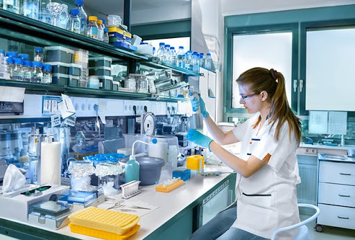

Las actividades de laboratorio clínico son llevadas a cabo por los profesionales del bioanálisis quienes son apoyados por personal que se desempeña como auxiliares de laboratorio que ejecutan distintas actividades que incluyen la toma de muestras, ejecución de pruebas, tinción de láminas, así como el manejo y disposición de muestras.
Deben poner en práctica normas de bioseguridad que les permitan protegerse de los riesgos químicos y biológicos a los que comúnmente se encuentran expuestos.
El laboratorio clínico es el lugar donde un equipo multidisciplinario formado por el químico clínico, el analista clínico, el médico, el patólogo clínico, los técnicos de laboratorio y los técnicos de diagnóstico y análisis clínico, analizan muestras biológicas humanas que contribuyen al estudio y a la prevención de enfermedades y hacen que la búsqueda y la investigación estén disponibles para el conocimiento humano. El laboratorio clínico se conoce como laboratorio de patología clínica y utiliza las metodologías de diversas disciplinas como la bioquímica, también llamada química clínica, la hematología, la inmunología y la microbiología.
En el laboratorio clínico se obtienen y se estudian muestras biológicas diversas, como la sangre, la orina, las heces, el líquido sinovial de las articulaciones, el líquido cefalorraquídeo, los exudados faríngeos y vaginales, entre otros tipos de muestras.